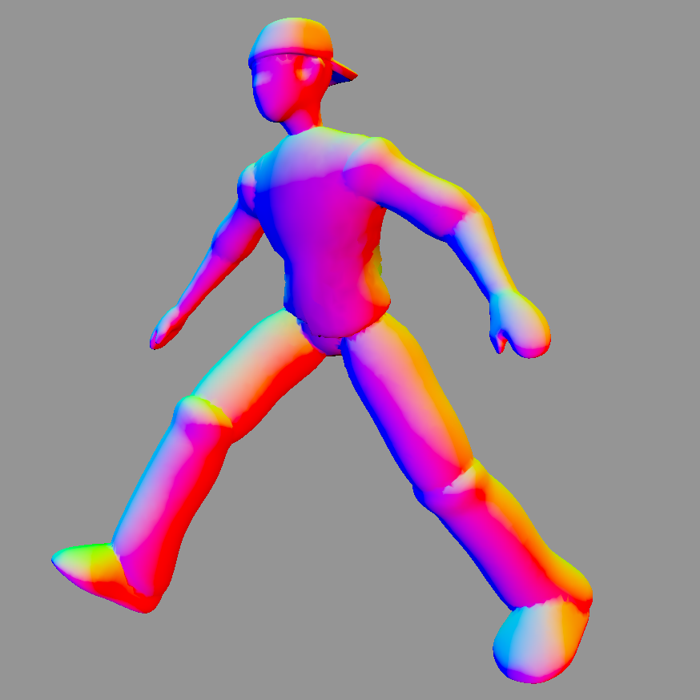
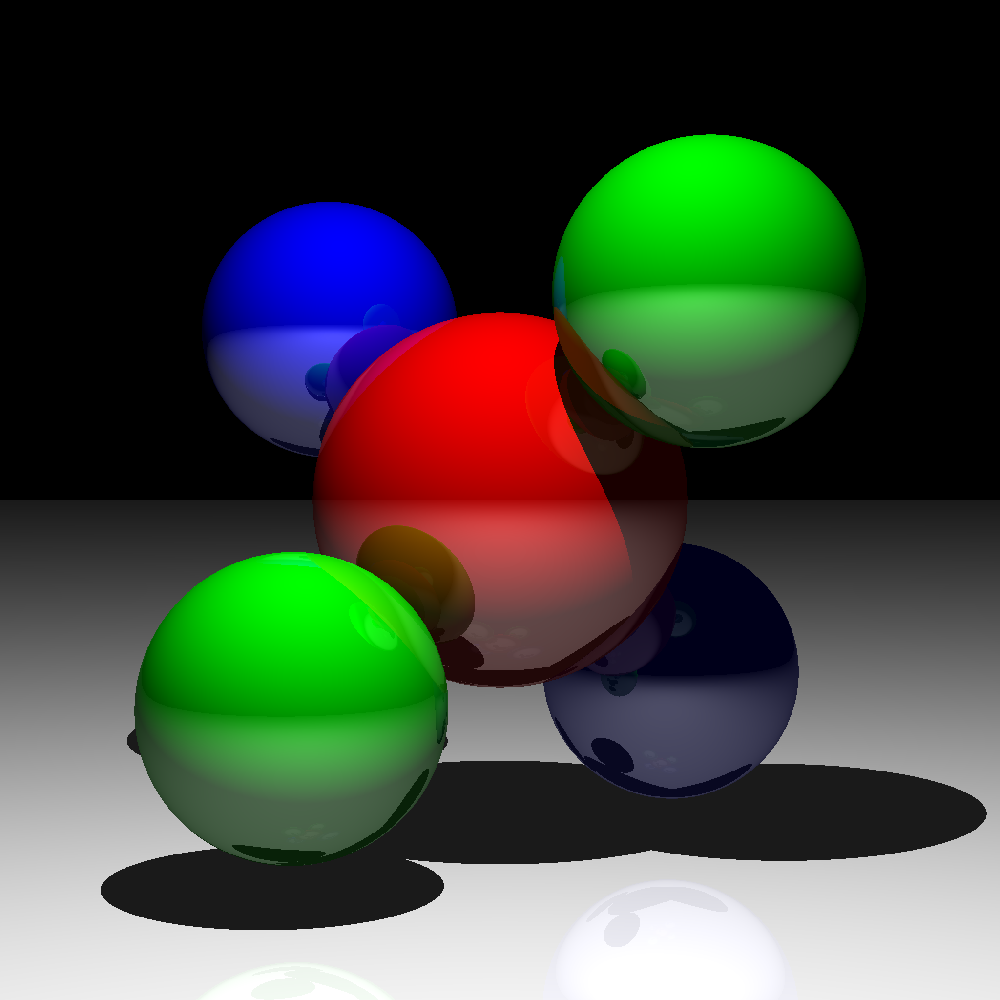

During my junior year of high school, I spent one of my class slots independently doing graphics programming projects.
I took the assignment specifications from MIT's Fall 2012 Computer Graphics course, timeless exercises covering a range of basic graphics programming concepts.
The graphics stack the assignments prescribed (OpenGL 2, C++03) is heavily out of date. I used their assets so that I wouldn't have to create new ones, but I didn't use their sample code, and just did the projects from scratch with Rust and wgpu. Annoyingly, this meant I had to write several bespoke parsers.
Not all of my implementations meet the specifications exactly, and several are incomplete, but they all do the spirit of what they're supposed to.
The code is available on GitHub. Instructions for how to run the code are there. Below are short synopses of the assignments.
Obj Parser and Renderer
This program parses and render obj files, drawing their normals as their color. Very straightforward.
Swept Surfaces Renderer
This program creates and renders triangle meshes from swept surfaces. The swept surfaces are defined from bezier curves or B-splines.
Skeletal Modeling
This program animates and renders skeletal models with joint hierarchies. It is hardcoded to swing the legs of the input model (all the sample models have the same bone structure), although the shader can handle any transformation of the hierarchy.

Particle-Based Cloth Simulation
This program models the physics of a cloth -- specifically, a flag flapping in the breeze -- with a particle based simulation.
Each particle is acted on by forces (gravity, wind, and springs binding the cloth together), and an rk4 numerical integrator, implemented in compute shaders, turns the forces into velocities that allow the cloth's motion to be simulated in real time.
Basic Raytracer
This program renders basic scenes with a custom raytracer implemented in a compute shader. It does not use the Monte Carlo method, using only one sample per pixel. I considered trying to implement global illumination, but realized I would have to rearchitect the program and so decided against it, as it is not in the course specification.

Terrain Renderer
This was not an assignment specification, but something I did because I had extra time. I found ultra-high resolution heightmap data for Alameda County and used tin-terrain to convert it into chunked meshes at varying levels of detail, which my program then rendered.
You can't actually see all of Alameda County at once, only the slice of it I processed. Still, the detail is remarkable. Too bad they didn't have data underneath Lake Chabot's waters.